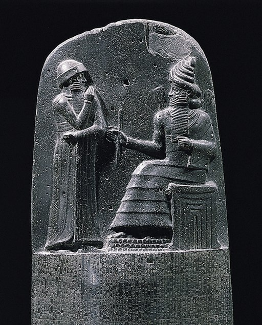

No es posible hacer un relato lineal de la historia del derecho, ya que se hace difícil delimitar a lo largo de la historia humana, los aspectos jurídicos y no jurídicos, lo escrito y lo que no fue escrito; determinar espacios geográficos donde se ha desarrollado y los tiempos en los que ha sucedido. Lo que sí podemos asegurar es que la historia del derecho surge desde la formación de una sociedad, desde que el hombre construyó una sociedad. Para el estudio de la historia del derecho, la ciencia ha echado mano de instrumentos como la arqueología, la paleontología, la antropología, etc. para que, por medio de vestigios se haya podido construir una idea de las primeras manifestaciones jurídicas de la vida humana.
El derecho ha cambiado a lo largo de la historia, adaptándose a las diferentes sociedades y contextos. Hoy en día, el derecho sigue siendo esencial para la vida social, ya que regula todos los aspectos de la vida humana. Sin embargo, todavía queda mucho trabajo por hacer para que el derecho sea respetado de manera justa por todos los ciudadanos. Por ello, es importante que todos contribuyamos a crear una sociedad respetuosa de los demás, de sus propios derechos y del derecho como moderador.
En las sociedades primitivas, se regulaban los comportamientos por medio de normas consuetudinarias, que quiere decir que eran transmitidas entre las generaciones por medio de la palabra. Los individuos seguían esas normas de manera instintiva, hasta que más tarde se hizo presente que esas reglas no podrían ser desobedecidas o de lo contrario se obtendría un castigo, es el momento en que surge el derecho en estas sociedades primitivas. Dichas normas se utilizaban para regular cosas como la propiedad, el matrimonio, el comercio, etc.
Al desarrollarse la agricultura y ganadería, estas normas requirieron ser más elaboradas, por lo cual surgen los primeros códigos de leyes escritas. Las manifestaciones más antiguas que se conocen surgieron en Asia, especialmente en Mesopotamia, en culturas como la acadia y sumeria. Un primer texto considerado legislativo es el Codex Ur-Nammu, elaborado por Shulgi, hijo del rey Ur-Nammu. Más tarde aparecen fragmentos de otros Codex de los acadios.
El texto más famoso que existe respecto a estas manifestaciones de códigos de leyes ya rigurosos es el Código de Hammurabi en Mesopotamia; por otro lado, también es popular el Código de Manú en la India, entre otros. A continuación te los explicamos:
Imagen de Mbzt, Wikimedia Commons.
El Código de Hammurabi muestra también un periodo en el cuál la ley deja de estar en manos de sacerdotes y busca también la unificación de las normas pues existían demasiados abusos hacia la parte más baja de la jerarquía social, por lo que el rey mandó poner copias del código en cada ciudad, para que todos pudieran conocer la ley y sus castigos.
Una de las leyes que se establece, es la ley del Talión, el popular "ojo por ojo, diente por diente", que es un principio de justicia retributiva en la que el castigo se identifica con el delito cometido. La mayoría de los castigos eran multas, aunque eran frecuentes los castigos con mutilación y la pena de muerte. La ley del Talión como tal, solía usarse sobre todo cuando el ofensor y el ofendido eran de la clase dominante y muchos de sus artículos también son muy distantes del concepto del "ojo por ojo...". Existen críticas hacia este código, ya que representó una regresión de los códigos sumerios anteriores, con la mencionada Ley del Talión y con sus penas y castigos demasiado crueles, ya que en esta sociedad la vida del individuo no se consideraba que tuviera más valor que el orden del Estado.

Parte superior de la estela. Imagen de Cyrali, Wikimedia Commons.